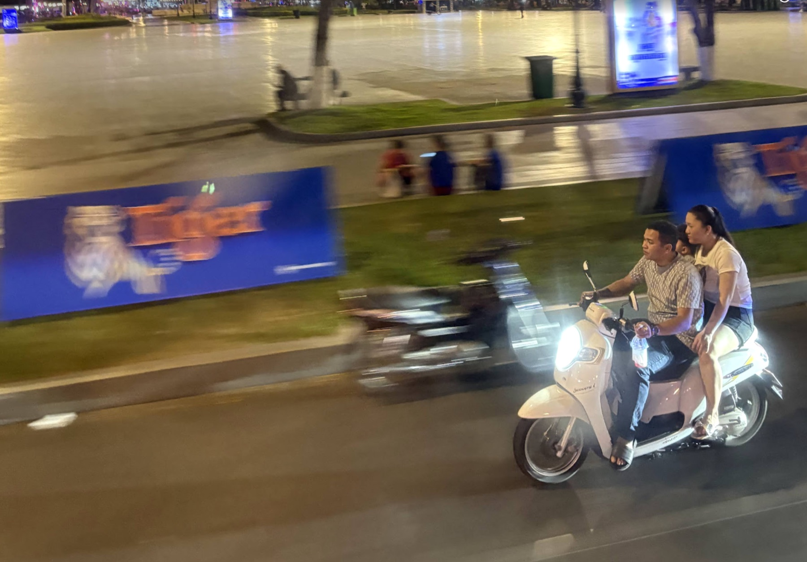

Motorcycles carry family life
Most daily movement happens on two wheels. A child passenger is exposed to adult traffic risk without adult anatomy, adult awareness, or adult protection.
The crisis
Cambodia's family transport reality is motorcycle-centered. Children ride to school, markets, and home on short daily trips where helmet habits are weakest and crash consequences can be lifelong.
Most daily movement happens on two wheels. A child passenger is exposed to adult traffic risk without adult anatomy, adult awareness, or adult protection.
The school run or neighborhood errand feels too familiar to require a helmet, even though routine trips are exactly where habits matter most.
Cheap plastic caps can look like helmets, but real protection requires certified impact absorption, fit, and a strapped-on shell that stays in place.
A respectful diagnosis
The research points to solvable barriers: heat discomfort, cost, forgetfulness, inconsistent enforcement, and fears that a helmet could harm a child's neck or head growth.

Myth vs reality
Every-ride habits matter because the familiar trip is the one families repeat most often.
Child-specific EPS helmets can be dramatically lighter than adult helmets and should be fitted to the child's size.
Tropical ventilation is core to the product strategy because comfort drives consistent use.